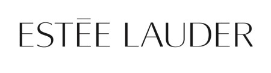

홈 > 브랜드 매거진 > 에스티 로더
에스티 로더
에스티 로더(Estée Lauder)는 1946년 미국에서 창립된 프레스티지 화장품 브랜드이자 글로벌 뷰티 그룹이다.
산업 분야 뷰티·퍼스널케어 · 공개 등급 자료 기반 · 브랜드 평가 4.3 ★


한눈에 보는 브랜드
에스티 로더(Estée Lauder)는 조세핀 에스터 멘처로 태어난 에스티 로더가 남편 조지프와 1946년 미국 뉴욕에서 단 네 가지 스킨케어 제품으로 시작한 럭셔리 뷰티 브랜드다. 1982년 선보인 갈색병 어드밴스드 나이트 리페어가 대표 제품이며, 같은 이름의 모그룹 The Estée Lauder Companies는 맥(MAC)·라메르(La Mer)·클리니크 등 다수 브랜드를 거느린 세계 2위 프레스티지 뷰티 그룹이다.
브랜드 관점
에스티 로더를 읽는 핵심은 매스 시장까지 아우르는 로레알(L'Oréal), 아시아 J뷰티 강자 시세이도(Shiseido)와 달리 프레스티지(고가) 뷰티에 집중한 순수 럭셔리 포트폴리오라는 점이다. 매출 규모로는 로레알에 이은 세계 2위지만, 대중 시장 노출 없이 라메르 같은 초고가 라인으로 차별화한다.
다만 매출의 큰 축이던 중국 본토와 아시아 면세(트래블 리테일) 수요가 2024~2025년 급격히 위축되며 실적이 흔들렸다. 2024 회계연도 매출은 약 156억 달러로 전년 대비 줄었고, 2025 회계연도 들어 분기 매출이 6% 안팎 빠졌다.
그룹은 최대 9천~1만 명 규모의 감원과 부서 정리를 단행했고, 2025년 1월 스테판 드 라 파베리를 새 CEO로 세워 백화점 의존을 줄이고 디지털·전문 채널로 무게를 옮기는 전환을 추진 중이다. 한국 역시 면세와 중국 수요 구조 조정의 영향을 함께 받는 시장으로 꼽힌다.
시작과 성장
에스티 로더는 1946년 에스티 로더와 남편 조지프 로더 부부가 미국 뉴욕에서 네 가지 스킨케어 제품으로 창업했다. 창업자는 미용실에서 헤어드라이어 아래 앉은 여성들에게 직접 발라 보이며 제품을 알렸다.
1953년에는 목욕용 오일이자 향수로 쓰이는 유스듀(Youth-Dew)를 선보여 향수 사업의 기반을 닦았다. 1982년에는 미국 최초의 세럼으로 불리는 어드밴스드 나이트 리페어(처음 이름은 나이트 리페어)를 출시했는데, 성분 보호를 위해 약병에서 따온 갈색 용기를 처음 도입했다.
이후 1994년 캐나다 토론토의 맥(MAC)에 투자해 1998년 인수했고, 1995년 라메르와 바비 브라운을, 1999년 조 말론 런던을 사들이며 다(多)브랜드 그룹으로 확장했다. 모그룹은 1995년 11월 16일 뉴욕증권거래소에 주당 26달러로 상장했다.
브랜드 아이덴티티
에스티 로더는 '모든 여성은 아름다워질 수 있다'는 창업자의 신념을 바탕으로 한 럭셔리 프레스티지 뷰티를 표방한다. 로고는 절제된 세리프 서체의 워드마크로, 차분한 감색(네이비)과 금색을 더해 격조와 신뢰를 드러낸다.
핵심 타깃은 검증된 효능과 품격을 중시하는 중상위 소비자이며, 백화점·면세점·전문 뷰티 매장과 자사 디지털 채널을 통해 만난다. 브랜드 보이스는 과장 대신 우아함과 전문성, 과학적 근거를 앞세우는 톤을 유지한다.
제품과 서비스
대표 제품은 갈색병으로 불리는 어드밴스드 나이트 리페어 세럼으로, 한국에서 100ml 단품이 약 9만5천 원, 두 개 듀오 세트가 약 16만5천 원대에 팔린다. 이 밖에 갈색병 아이 세럼, 더블 웨어 파운데이션 등 메이크업과 유스듀 계열 향수까지 스킨케어·메이크업·프래그런스를 두루 갖췄다.
채널은 백화점, 면세점, 올리브영 같은 전문 매장과 온라인으로 나뉜다.
사람들
창업자: 에스티 로더와 조지프 로더(Estée Lauder & Joseph Lauder)가 1946년 창업했다. 소유: 독립 상장사(에스티 로더 컴퍼니스, NYSE: EL), 로더 가문이 의결권 다수를 보유한다.
현재 상태
모그룹 The Estée Lauder Companies는 미국 뉴욕 맨해튼 미드타운에 본사를 둔 글로벌 뷰티 기업이다. 2025년 1월부터 스테판 드 라 파베리가 회장 겸 CEO를 맡아 전임 파브리치오 프레다의 뒤를 이었다.
2024 회계연도(2024년 6월 마감) 매출은 약 156억 달러로 전년 대비 약 2% 줄었다. 에스티 로더 단일 브랜드의 별도 매출과 한국 법인 실적 등 세부 수치는 공개되어 있지 않다.
타임라인
BI/CI 변천사
함께 읽을 브랜드
 뷰티·퍼스널케어 · 자료 기반시세이도
뷰티·퍼스널케어 · 자료 기반시세이도시세이도(Shiseido)는 1872년 창립된 일본의 종합 화장품 기업이다.
 뷰티·퍼스널케어 · 자료 기반라 메르
뷰티·퍼스널케어 · 자료 기반라 메르라 메르(La Mer)는 발효 해조류 성분 미라클 브로스를 핵심으로 하는 에스티 로더 산하 럭셔리 스킨케어 브랜드이다.
 뷰티·퍼스널케어 · 디렉토리올리브영
뷰티·퍼스널케어 · 디렉토리올리브영올리브영은 대한민국의 헬스앤뷰티 리테일 브랜드입니다. 화장품, 스킨케어, 건강식품, 퍼스널케어 상품을 큐레이션하며 K뷰티 유통의 대표 접점으로 자리 잡았습니다.
 뷰티·퍼스널케어 · 자료 기반코스맥스
뷰티·퍼스널케어 · 자료 기반코스맥스코스맥스(COSMAX)는 1992년 설립된 한국의 화장품 ODM 기업으로, 세계 1위 화장품 ODM 제조사로 꼽힌다.
키엘(Kiehl's)은 1851년 미국 뉴욕에서 약방으로 출발한 스킨케어 브랜드다. 옛 약제상(apothecary) 헤리티지를 바탕으로 한 미니멀한 제품으로 알려졌으...
 뷰티·퍼스널케어 · 자료 기반달바
뷰티·퍼스널케어 · 자료 기반달바달바(d'Alba)는 달바글로벌이 전개하는 대한민국의 프리미엄 비건 스킨케어 브랜드다. 2016년 론칭했으며 화이트 트러플 성분의 미스트 세럼으로 글로벌 베스트셀러를...
 뷰티·퍼스널케어 · 자료 기반설화수
뷰티·퍼스널케어 · 자료 기반설화수설화수(Sulwhasoo)는 아모레퍼시픽이 1997년 론칭한 대한민국의 한방 럭셔리 스킨케어 브랜드다. 한방 원료와 프리미엄 포지셔닝으로 아모레퍼시픽을 대표하는 럭셔...
 뷰티·퍼스널케어 · 편집 검수니베아
뷰티·퍼스널케어 · 편집 검수니베아니베아(NIVEA)는 1911년 독일 바이어스도르프(Beiersdorf)가 출시한 글로벌 스킨케어 브랜드다. 세계 최초의 안정적인 유중수(油中水) 유화 크림을 선보이...